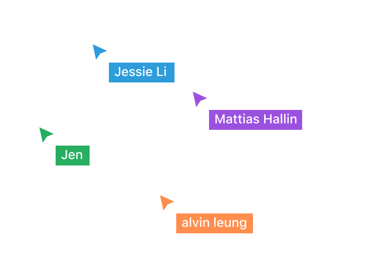

HelpMate
Build connections in the local community one task at a time.
As a final project in an Interface Design course at Simon Fraser University, our team designed, prototyped, tested and pitched an App idea to the class in 7 weeks.
Scenario
For some demographics, such as people with disabilities and seniors, household chores can be an incredible burden. However, they may not have the money to hire a professional and/or feel hesitant about inviting a stranger into their home.
Our Pitch
HelpMate is a community-based task finding application that allows you to help their community members with household chores. The app provides an easy way for young people to connect with their communities while simultaneously earning some money or volunteer hours to put towards their education.
Hunting for an App idea
In a feedback session with our instructors, we realised that our app idea is working in a very crowded problem space. After some research, it was apparent that if we want to differentiate ourselves from the competing apps, we have to narrow down the audience scope and focus on polishing the experience for their use cases.
Understanding the User
With that in mind, we utilise empathy map and persona to help us empathise with the potential user. Experience map is also used to identify design opportunities when coming up with app features.

Design Principles
Based on the target audience insight, we established a set of design principles which guide our design decisions
-
Safety & Trust
Unlike Craigslist, HelpMate requires that users are verified with the app in order to create or accept tasks. Helpers and Clients are able to discuss with each other before committing to a task, and leave reviews on their performance. A check-in system instills a sense of assurance for the completion of a task.
-
Flexibility & Support
Students may find it hard to commit to a traditional part-time job due fluctuating schedules. HelpMate’s scheduling flexibility allows Helpers and Clients to organize an appointment without the rigidity of a formal job. In the event of an emergency, users are given the option to reschedule their tasks.
-
Community
We believe there’s more to the relationship between Helpers and Clients than merely monetary exchange. HelpMate seeks to connect different individuals in the community through helping each other and encouraging building relationships, and not only hiring someone to get the job done.
Designs
And the first version of the design was born 🎉
Moment of Truth
To see how the design is performing, the prototype was being tested with 5 University students and 1 full-time worker. Utilising a user testing script created by our group member Jessie Li, we also take this chance to get additional user feedback for the general design direction.
6 Remote User Tests
- Ages 18-29
- 5 University Students
- 1 Full-time Worker
Structured Interviews
- Participant Background
- User Flow Testing
- Follow-Up Questions
Making Sense with Data
To turn these raw test data into actionable items, an affinity map was used to identify common themes among the test results. After identifying themes in the test result, we labeled them with different priority based on the impact of the core app experience.

Final Pitch
Project Takeaway
Because of the scope and time constraint of the course, except usability testing, we were mostly working with our secondary research(ie. reddit, reading papers) and assumptions had to be made. We were aware that this is not ideal, however as a design exercise that focuses on the craft of creating user interfaces, I still think this is a successful project. We went through arguments and arguments from the overall direction to the finest details of button placements. The resultis a child of this amazing push and pull dynamics of the team.
Working with these experienced teammates, this project has taught me an important lesson on the attitude of team collaboration and the importance of sharing ideas with the team. As a “perfectionist”, I used to have a very bad habit of holding an idea to myself and refine it before sharing it with the design team, because I was so self conscious about any criticism towards “my idea”. Through this project, I learned to put my ego aside and share unfinished work with colleagues. Couldn't say that I fully overcame this aspect of myself for now, I’ll still get upset sometimes when people say not so good things about my design. However, now I am aware of this tendency of mine when designing, I can figure out ways to deal with it and hopefully slowly I can internalise it.
Unfortunately, we weren’t able to take a group photo together due to coronavirus lockdown, but I wouldn’t forget how much I learned from these awesome humans.